Слух: в GTA 6 потратили $300 млн на воду — с ураганами и сёрфингомОбновлено 29.09.2026

Разбор кадра: Джейсон ест чипсы у Mami’s GroceryОбновлено 29.09.2026

Погода в GTA 5 и GTA 6: от смога Лос-Сантоса к флоридским штормамОбновлено 29.09.2026

Миф: GTA 6 снова перенесут, Rockstar всегда переноситОбновлено 29.09.2026
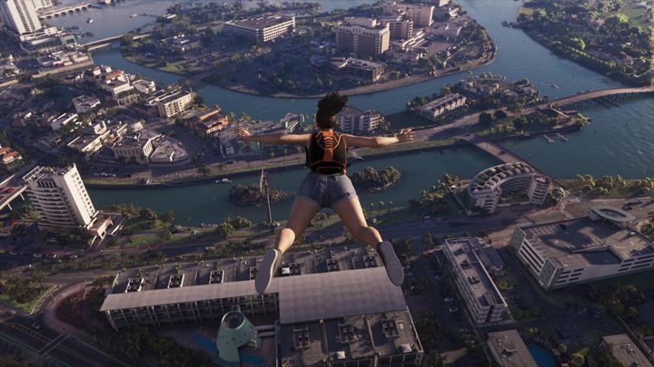
Слух: сюжет GTA 6 — 80 часов, а карта втрое больше RDR2Обновлено 28.09.2026
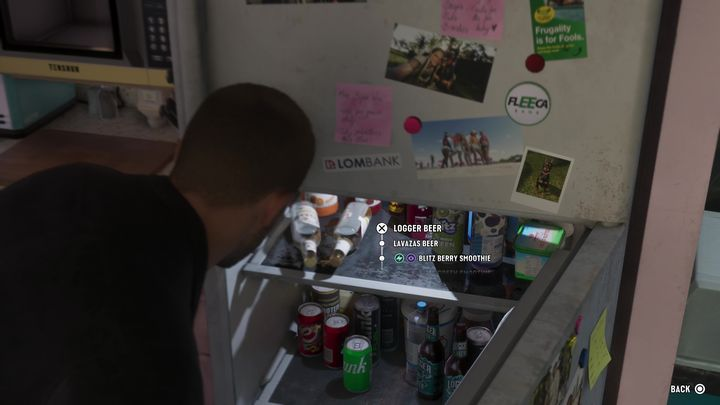
Разбор кадра: что лежит в холодильнике в Вайс-СитиОбновлено 28.09.2026
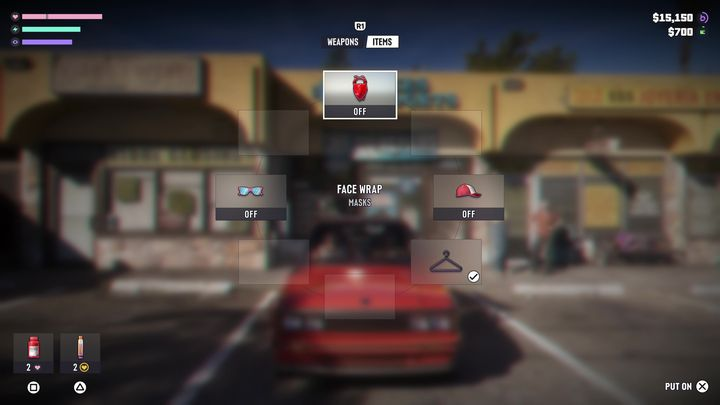
Оружие и снаряжение в GTA 5 и GTA 6: карманы без дна закончилисьОбновлено 28.09.2026
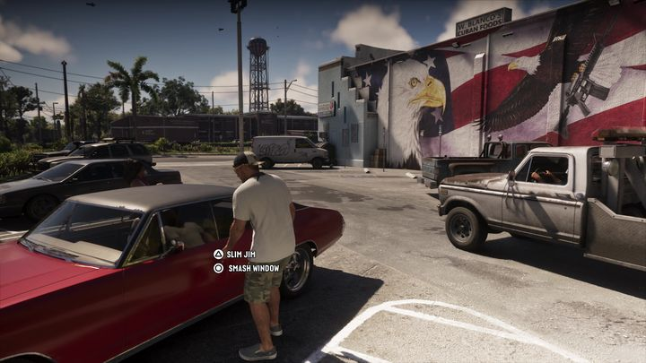
Миф: в GTA 6 можно угнать любую машинуОбновлено 28.09.2026
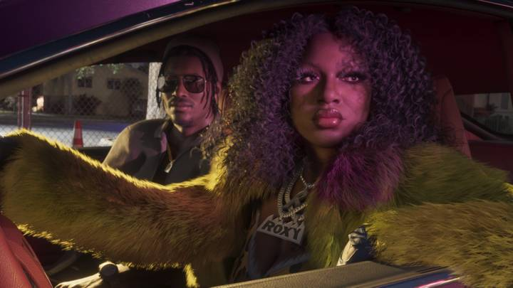
Слух: GTA 6 выйдет на Nintendo Switch 2 одновременно с PS5Обновлено 27.09.2026
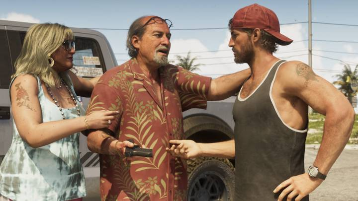
Разбор кадра: Брайан Хедер передаёт Джейсону пистолетОбновлено 27.09.2026
Герои GTA 5 и GTA 6: трое против двоихОбновлено 27.09.2026

Миф: трейлеры GTA 6 — это пререндер, в игре так не будетОбновлено 27.09.2026

Слух: у GTA 6 будет коллекционное изданиеОбновлено 26.09.2026
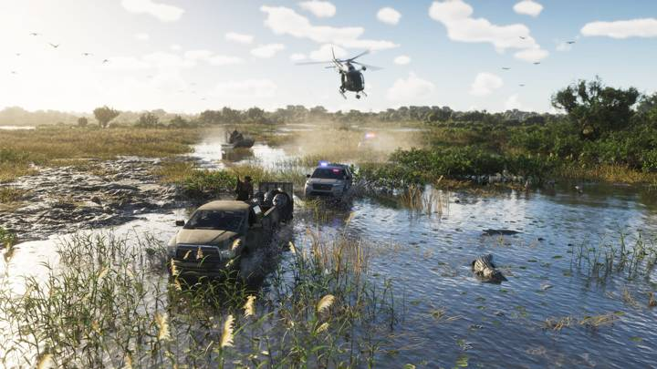
Разбор кадра: погоня на болотах GrassriversОбновлено 26.09.2026
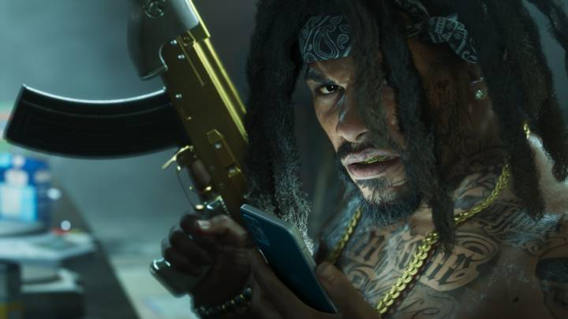
Полиция в GTA 5 и GTA 6: как изменился розыскОбновлено 26.09.2026
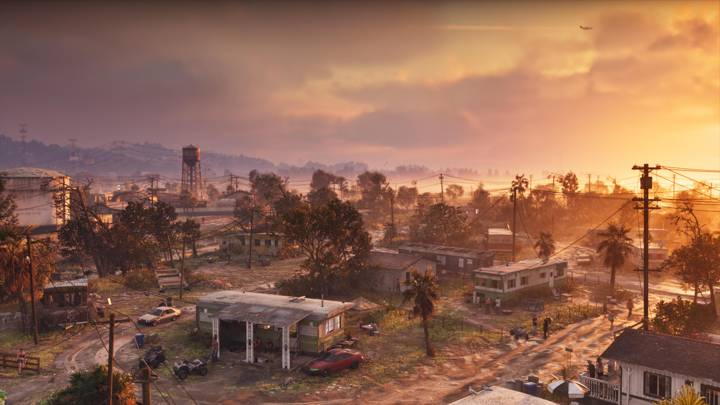
Миф: GTA 6 соберёт все награды «Игра года» в 2026Обновлено 26.09.2026
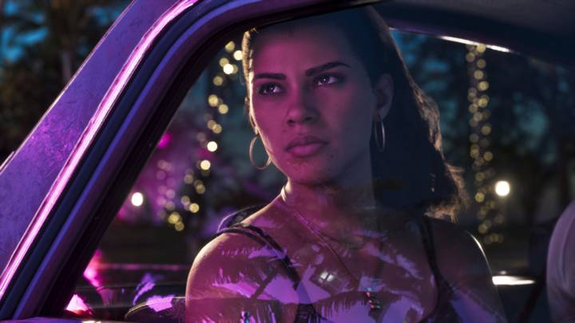
Слух: в GTA 6 будет русская озвучкаОбновлено 24.09.2026
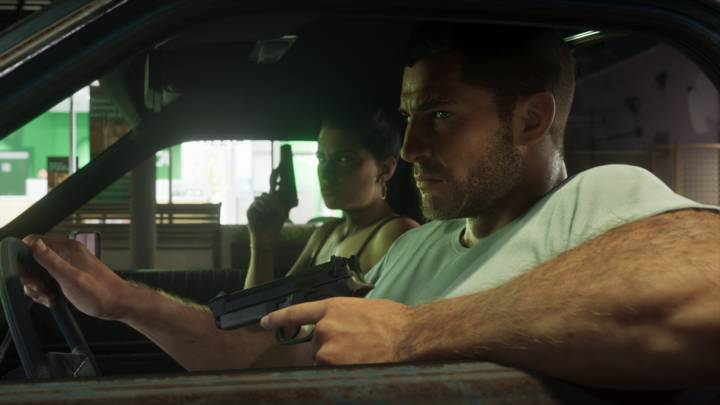
Слух: GTA 6 выйдет на PS4 и Xbox OneОбновлено 24.09.2026
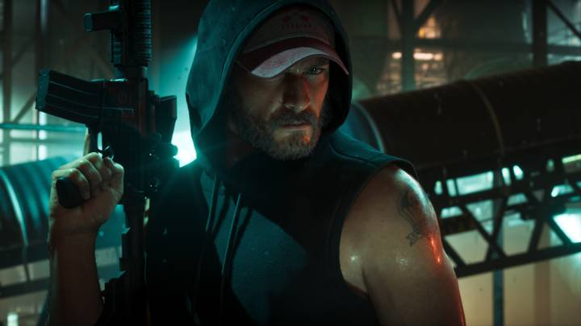
Слух: GTA 6 выйдет на ПК одновременно с консолямиОбновлено 24.09.2026
Слух: в GTA 6 будет 700 интерьеровОбновлено 24.09.2026

Разбор кадра: улица в Leonida KeysОбновлено 24.09.2026

GTA 5 и GTA 6: главные отличияОбновлено 24.09.2026
10 мифов о GTA 6Обновлено 24.09.2026